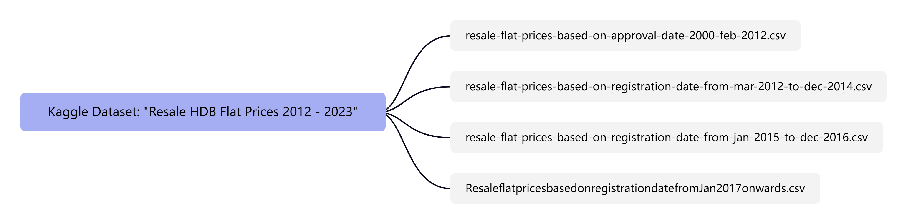

HDB Resale Dataset: Data Preparation
1 Getting Started
1.1 Download Data
The data is sourced from the Kaggle dataset “Resale HDB Flat Prices 2012 - 2023”, which comprises four CSV files as follows:

The research for this project will be limited to the recent 10 years, from 01/01/2013 to 31/12/2023. Therefore, the required data files are the following three:
resale-flat-prices-based-on-registration-date-from-mar-2012-to-dec-2014.csv
resale-flat-prices-based-on-registration-date-from-jan-2015-to-dec-2016.csv
ResaleflatpricesbasedonregistrationdatefromJan2017onwards.csv
1.2 Load R Packages
R packages required:
tidyverse for processing datasets, inside this package we will use:
readr for reading CSV files
dplyr for operations such as filtering, selecting, transforming, summarizing, and joining data
DT for the creation of interactive HTML tables from R data frames
summarytools for generating a descriptive statistical summary of the data frame
2 Data Preparation
2.1 Import Data
The necessary .CSV files will be imported as a list of CSV files, then compiled into a single dataframe using R.
First, let’s take a look at the three CSV files and check their difference.
#read .csv data files
data1 <- read.csv("data/resale-flat-prices-based-on-registration-date-from-mar-2012-to-dec-2014.csv")
glimpse(data1)Rows: 52,203
Columns: 10
$ month <chr> "2012-03", "2012-03", "2012-03", "2012-03", "2012-…
$ town <chr> "ANG MO KIO", "ANG MO KIO", "ANG MO KIO", "ANG MO …
$ flat_type <chr> "2 ROOM", "2 ROOM", "3 ROOM", "3 ROOM", "3 ROOM", …
$ block <chr> "172", "510", "610", "474", "604", "154", "110", "…
$ street_name <chr> "ANG MO KIO AVE 4", "ANG MO KIO AVE 8", "ANG MO KI…
$ storey_range <chr> "06 TO 10", "01 TO 05", "06 TO 10", "01 TO 05", "0…
$ floor_area_sqm <dbl> 45, 44, 68, 67, 67, 68, 67, 67, 67, 67, 68, 67, 68…
$ flat_model <chr> "Improved", "Improved", "New Generation", "New Gen…
$ lease_commence_date <int> 1986, 1980, 1980, 1984, 1980, 1981, 1978, 1979, 19…
$ resale_price <dbl> 250000, 265000, 315000, 320000, 321000, 321000, 32…#read .csv data files
data2 <- read.csv("data/resale-flat-prices-based-on-registration-date-from-jan-2015-to-dec-2016.csv")
glimpse(data2)Rows: 37,153
Columns: 11
$ month <chr> "2015-01", "2015-01", "2015-01", "2015-01", "2015-…
$ town <chr> "ANG MO KIO", "ANG MO KIO", "ANG MO KIO", "ANG MO …
$ flat_type <chr> "3 ROOM", "3 ROOM", "3 ROOM", "3 ROOM", "3 ROOM", …
$ block <chr> "174", "541", "163", "446", "557", "603", "709", "…
$ street_name <chr> "ANG MO KIO AVE 4", "ANG MO KIO AVE 10", "ANG MO K…
$ storey_range <chr> "07 TO 09", "01 TO 03", "01 TO 03", "01 TO 03", "0…
$ floor_area_sqm <dbl> 60, 68, 69, 68, 68, 67, 68, 68, 67, 68, 67, 68, 68…
$ flat_model <chr> "Improved", "New Generation", "New Generation", "N…
$ lease_commence_date <int> 1986, 1981, 1980, 1979, 1980, 1980, 1980, 1981, 19…
$ remaining_lease <int> 70, 65, 64, 63, 64, 64, 64, 65, 62, 69, 60, 64, 65…
$ resale_price <dbl> 255000, 275000, 285000, 290000, 290000, 290000, 29…#read .csv data files
data3 <- read.csv("data/ResaleflatpricesbasedonregistrationdatefromJan2017onwards.csv")
glimpse(data3)Rows: 169,584
Columns: 11
$ month <chr> "2017-01", "2017-01", "2017-01", "2017-01", "2017-…
$ town <chr> "ANG MO KIO", "ANG MO KIO", "ANG MO KIO", "ANG MO …
$ flat_type <chr> "2 ROOM", "3 ROOM", "3 ROOM", "3 ROOM", "3 ROOM", …
$ block <chr> "406", "108", "602", "465", "601", "150", "447", "…
$ street_name <chr> "ANG MO KIO AVE 10", "ANG MO KIO AVE 4", "ANG MO K…
$ storey_range <chr> "10 TO 12", "01 TO 03", "01 TO 03", "04 TO 06", "0…
$ floor_area_sqm <dbl> 44, 67, 67, 68, 67, 68, 68, 67, 68, 67, 68, 67, 67…
$ flat_model <chr> "Improved", "New Generation", "New Generation", "N…
$ lease_commence_date <int> 1979, 1978, 1980, 1980, 1980, 1981, 1979, 1976, 19…
$ remaining_lease <chr> "61 years 04 months", "60 years 07 months", "62 ye…
$ resale_price <dbl> 232000, 250000, 262000, 265000, 265000, 275000, 28…Observation from the above glimpse:
The data file “mar-2012-to-dec-2014” is missing the “remaining_lease” column.
The “remaining_lease” column in “jan-2015-to-dec-2016” is of integer data type.
The “remaining_lease” column in “Jan-2017-onwards” is of character data type.
All other column names and data types are identical across the three data files.
2.2 Merge Data
Before merging the three data files, the following steps need to be performed:
Step 1. Add a column named “remaining_lease” to the “mar-2012-to-dec-2014” data file.
According to research, the tenure of Singapore HDB properties is 99 years.
Thus, the value of “remaining_lease” is calculated as 99 - (month - lease_commence_date). Note that “month” stands for the date of HDB resale in the datasets.
Step 2. Delete the original “remaining_lease” column in “jan-2015-to-dec-2016” and “Jan-2017-onwards” data file, and create new “remaining_lease” columns with the same formula as above.
# Calculate remaining lease based on the provided formula
data1 <- data1 %>%
mutate(remaining_lease = 99 - (as.numeric(substr(month, 1, 4)) - lease_commence_date))
# delete original remaining_lease column and create a new one
data2 <- data2 %>%
select(-remaining_lease) %>%
mutate(remaining_lease = 99 - (as.numeric(substr(month, 1, 4)) - lease_commence_date))
data3 <- data3 %>%
select(-remaining_lease) %>%
mutate(remaining_lease = 99 - (as.numeric(substr(month, 1, 4)) - lease_commence_date))Then, we can start merging the three files together.
2.3 Extract Data
To be able to extract the data from 2013 to 2023, we need to do the follow steps:
Step 1. Make sure the data type of column “month” is date-type.
Step 2. Extract data in 2013-2023.
2.4 Check Data Health
Now that we have a single dataframe, we first check the health of the dataframe by:
using glimpse() to look at the structure of the dataframe, data types of the columns, and some values of the dataframe,
using datatable() from the DT package to view the dataframe more interactively,
using duplicate() to check the dataframe for any duplicated entries using duplicate(),
using summary() to check the distribution of values,
using descr() to show the descriptive statistics of non-numerical variables.
Rows: 238,519
Columns: 11
$ month <date> 2013-01-01, 2013-01-01, 2013-01-01, 2013-01-01, 2…
$ town <chr> "ANG MO KIO", "ANG MO KIO", "ANG MO KIO", "ANG MO …
$ flat_type <chr> "2 ROOM", "2 ROOM", "2 ROOM", "3 ROOM", "3 ROOM", …
$ block <chr> "510", "314", "323", "170", "174", "445", "607", "…
$ street_name <chr> "ANG MO KIO AVE 8", "ANG MO KIO AVE 3", "ANG MO KI…
$ storey_range <chr> "01 TO 03", "01 TO 03", "04 TO 06", "07 TO 09", "0…
$ floor_area_sqm <dbl> 44, 44, 44, 61, 60, 67, 68, 67, 68, 67, 74, 67, 68…
$ flat_model <chr> "Improved", "Improved", "Improved", "Improved", "I…
$ lease_commence_date <int> 1980, 1978, 1977, 1986, 1986, 1979, 1980, 1980, 19…
$ resale_price <dbl> 253000, 270000, 283000, 305000, 320000, 325000, 32…
$ remaining_lease <dbl> 66, 64, 63, 72, 72, 65, 66, 66, 65, 66, 66, 65, 66…'data.frame': 610 obs. of 11 variables:
$ month : Date, format: "2013-03-01" "2013-04-01" ...
$ town : chr "JURONG EAST" "BUKIT BATOK" "TOA PAYOH" "TOA PAYOH" ...
$ flat_type : chr "3 ROOM" "3 ROOM" "3 ROOM" "5 ROOM" ...
$ block : chr "252" "523" "57" "81" ...
$ street_name : chr "JURONG EAST ST 24" "BT BATOK ST 52" "LOR 5 TOA PAYOH" "LOR 4 TOA PAYOH" ...
$ storey_range : chr "01 TO 03" "01 TO 03" "01 TO 03" "19 TO 21" ...
$ floor_area_sqm : num 67 60 61 122 60 146 74 67 67 93 ...
$ flat_model : chr "New Generation" "Improved" "Standard" "Improved" ...
$ lease_commence_date: int 1985 1987 1973 1997 1986 1991 1984 1972 1979 2010 ...
$ resale_price : num 343000 315000 320000 880000 300000 720000 388000 292000 356000 600000 ...
$ remaining_lease : num 71 73 59 83 72 77 70 58 65 96 ... month town flat_type block
Min. :2013-01-01 Length:238519 Length:238519 Length:238519
1st Qu.:2016-07-01 Class :character Class :character Class :character
Median :2019-05-01 Mode :character Mode :character Mode :character
Mean :2019-01-13
3rd Qu.:2021-10-01
Max. :2023-12-01
street_name storey_range floor_area_sqm flat_model
Length:238519 Length:238519 Min. : 31.00 Length:238519
Class :character Class :character 1st Qu.: 76.00 Class :character
Mode :character Mode :character Median : 94.00 Mode :character
Mean : 96.99
3rd Qu.:112.00
Max. :280.00
lease_commence_date resale_price remaining_lease
Min. :1966 Min. : 140000 Min. :42.00
1st Qu.:1984 1st Qu.: 360000 1st Qu.:64.00
Median :1993 Median : 447000 Median :74.00
Mean :1994 Mean : 478311 Mean :74.66
3rd Qu.:2003 3rd Qu.: 563000 3rd Qu.:85.00
Max. :2022 Max. :1500000 Max. :98.00 Non-numerical variable(s) ignored: month, town, flat_type, block, street_name, storey_range, flat_modelDescriptive Statistics
extract_data
N: 238519
floor_area_sqm lease_commence_date remaining_lease resale_price
----------------- ---------------- --------------------- ----------------- --------------
Mean 96.99 1994.22 74.66 478310.91
Std.Dev 24.17 13.32 12.97 160952.26
Min 31.00 1966.00 42.00 140000.00
Q1 76.00 1984.00 64.00 360000.00
Median 94.00 1993.00 74.00 447000.00
Q3 112.00 2003.00 85.00 563000.00
Max 280.00 2022.00 98.00 1500000.00
MAD 26.69 13.34 14.83 143812.20
IQR 36.00 19.00 21.00 203000.00
CV 0.25 0.01 0.17 0.34
Skewness 0.28 0.18 0.02 1.04
SE.Skewness 0.01 0.01 0.01 0.01
Kurtosis -0.11 -0.98 -1.04 1.28
N.Valid 238519.00 238519.00 238519.00 238519.00
Pct.Valid 100.00 100.00 100.00 100.00Observation from the above:
From
glimpse(), we can see the data types of all variables. There are four numerical variables: floor_area_sqm, lease_commence_date, resale_price, remaining_lease. Seven categorical variables: month, town, flat_type, block, street_name, storey_range, flat_model. Variable town, flat_type, block, street_name, storey_range, flat_model are all character-type.From
glimpse(), we can see that there are a total of 238,519 rows and 11 columns. Combining theLengthof categorical variables seen insummary()and theN.Validfromdescr()for numerical variables, we find that each variable has 238,519 values, indicating that there are no missing values in this dataframe.From
duplicate(), we can see that there are 610 records have duplicate rows. We speculate that it is caused by duplicate data entry.
After the above observations, we are going to process the data to make it more suitable for our subsequent analysis.
Step 1. Convert all character-type variables to factor-type variables so that we can analyze the distribution of the different values of categorical variables in subsequent analyses.
Step 2. Remove all the duplicate rows.
Check duplicates again by the code chunk below:
'data.frame': 0 obs. of 11 variables:
$ month : 'Date' num(0)
$ town : Factor w/ 26 levels "ANG MO KIO","BEDOK",..:
$ flat_type : Factor w/ 7 levels "1 ROOM","2 ROOM",..:
$ block : Factor w/ 2699 levels "1","10","100",..:
$ street_name : Factor w/ 567 levels "ADMIRALTY DR",..:
$ storey_range : Factor w/ 17 levels "01 TO 03","04 TO 06",..:
$ floor_area_sqm : num
$ flat_model : Factor w/ 21 levels "2-room","3Gen",..:
$ lease_commence_date: int
$ resale_price : num
$ remaining_lease : num 3 Save Data
Let’s take a look again at the processed dataframe.
Rows: 237,909
Columns: 11
$ month <date> 2013-01-01, 2013-01-01, 2013-01-01, 2013-01-01, 2…
$ town <fct> ANG MO KIO, ANG MO KIO, ANG MO KIO, ANG MO KIO, AN…
$ flat_type <fct> 2 ROOM, 2 ROOM, 2 ROOM, 3 ROOM, 3 ROOM, 3 ROOM, 3 …
$ block <fct> 510, 314, 323, 170, 174, 445, 607, 535, 449, 602, …
$ street_name <fct> ANG MO KIO AVE 8, ANG MO KIO AVE 3, ANG MO KIO AVE…
$ storey_range <fct> 01 TO 03, 01 TO 03, 04 TO 06, 07 TO 09, 01 TO 03, …
$ floor_area_sqm <dbl> 44, 44, 44, 61, 60, 67, 68, 67, 68, 67, 74, 67, 68…
$ flat_model <fct> Improved, Improved, Improved, Improved, Improved, …
$ lease_commence_date <int> 1980, 1978, 1977, 1986, 1986, 1979, 1980, 1980, 19…
$ resale_price <dbl> 253000, 270000, 283000, 305000, 320000, 325000, 32…
$ remaining_lease <dbl> 66, 64, 63, 72, 72, 65, 66, 66, 65, 66, 66, 65, 66…In the end, we will save this dataframe as a rds object for faster loading of data in the future.